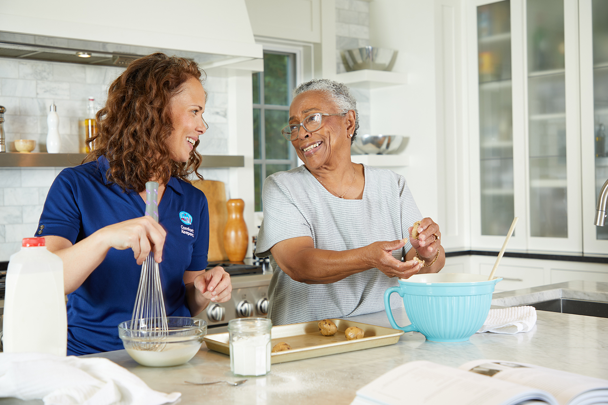
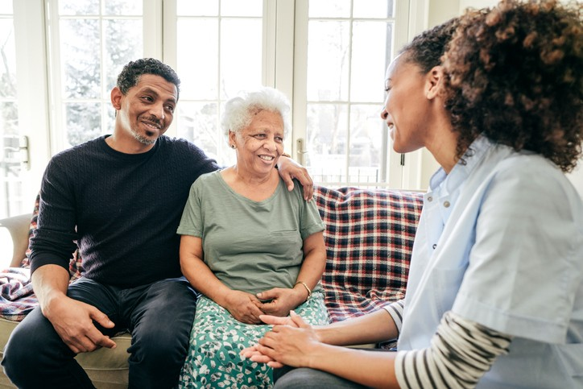
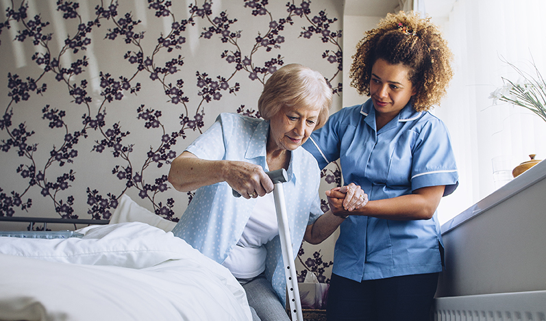
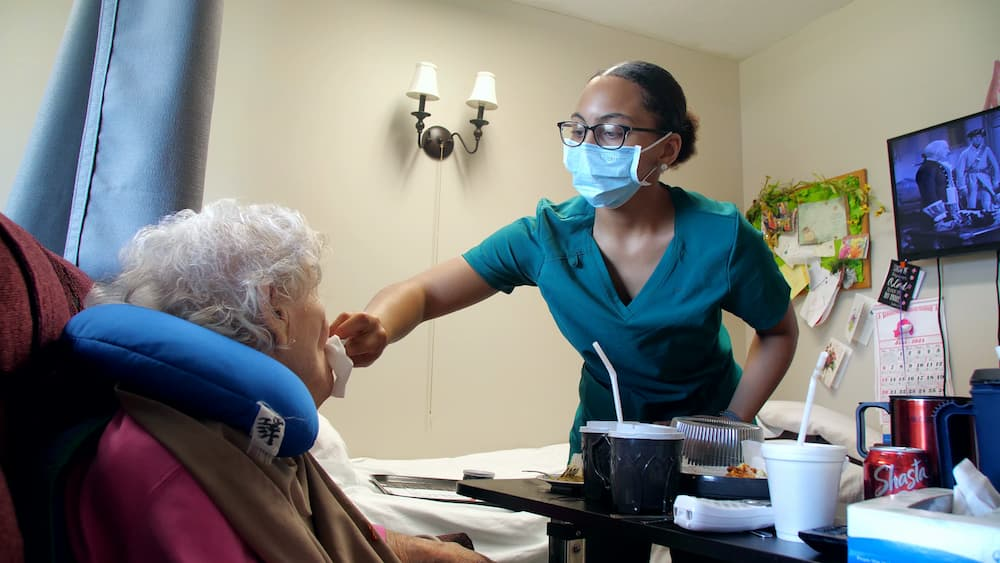

Home Care Services
Health Services
We provide 24-hour monitoring for the elderly sick. Professional
doctors and nurses are on-call to assist with any medical
emergency as well as provide medicine. Nurses ensure that the
elderly patient has taken all the prescribed medicine at the
right time.

Nutrition
We have brought in chefs and nutritionist to prepare the
healthiest food for the elders. This includes a balanced diet as
well as ensure that the elders receive at least three meals a
day. The kitchen also ensures special diet for the elders with
special nutrition. Nutritionist advice on the best course meal
for the elder patient.

Companionship
Our staff are more than care givers; they are your family. They
are trained professionals in areas of psychology which aids them
in identifying human behavior. This means they learn to make
conversations with the elders in a way that keeps them warm and
aware of their environment and the people around them. They set
up groups and activities that keep the elders busy and
entertained.
Personal Care Services

Physical assistance
Personal care givers provide assistance at home as the client
needs. This includes assistance in cooking and determining the
best diet, assistance in physical exercise and occasionally
cleaning the house.

Health monitoring
Personal care givers are trained medical professionals and
therefore they stay close to monitor and report any medical
emergencies and complications. They immediately handle any
emergencies or call the hospital they are in partnership to
handle the emergency.
Personal Companion
Apart from being personal assistants, personal care givers can
also participate in conversations and general companionship.
They can create or participate in activities that keep the
client entertained including games and physical exercises.